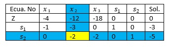

3.4.1 El criterio de factibilidad y el criterio de optimalidad
Condición dual de factibilidad. La variable de salida, x 1, es la variable básica que tiene valor más negativo (los empates se rompen de forma arbitraria). Si todas las variables básicas son no negativas, el algoritmo se termina.
Condición dual de optimalidad. Dado que x 1, es la variable de salida, sea Cj el costo reducido de la variable no básica x¡, y αrj el coeficiente de restricción en la fila x, y en la columna x J de la tabla. La variable de entrada es la variable de entrada es la variable no básica con αrj < 0 que corresponde a
Min { |cj/αrj|+αrj<0}
No básica x J
(Los empates se rompen arbitrariamente). Si αrj ≥ con todas las xi no básicas, el problema no tiene una solución factible.
Para iniciar la programación lineal óptima y no factible, se debe cumplir con dos requisitos:
La función objetivo debe satisfacer la condición de optimalidad del método simplex regular.
Todas las restricciones deben ser del tipo (≤).
Las desigualdades del tipo (≥) se convierten en (≤) al multiplicar ambos lados de la desigualdad por -1. Si la PL incluye restricciones (=), la ecuación se puede reemplazar por dos desigualdades. Por ejemplo, x1 +
x2 =1, equivalente a x1 + x2 ≤1, x3 + x2 ≥ 1, o x1 + x2 ≤1, - x1 + x2 ≤ -1. La solución inicial es no factible si al menos uno de los lados derechos de las desigualdades es negativo [7].
A continuación, se presentan tres ejemplos aplicando el Método Simplex Dual:
Ejemplo (1):
Minimizar Z = 4x1 +12 x2 +18 x3
Sujeto a:
x1 + 3 x2 ≥ 3
2 x1 +2 x3 ≥ 5
xi≥0
Solución:
Max Z - 4x1 -12 x2 -18 x3 = 0
Sujeto a:
-x1-3 x2+ s1 ≤ -3
-2 x2 – 2 x3 + s2 ≤ -5

Elaboración propia
La tabla es óptima porque todos los costos reducidos en la fila Z son ≤ 0 (Cx1 =-4, Cx 2= - 12, Cx3 = -18, C4= 0 y C 5 =0). También es no factible porque al menos una de las variables básicas es negativa (s1=-3, s2= -5).
La variable de salida es el número más negativo en la columna de las soluciones, en este caso es el -5 del renglón de s2 por lo tanto al dividir Z entre s2 (solo las variables no básicas que son x1, x2 y x3)
z/s2 de x1 = -4/0 = INFINITO; Z/s2 de x2 = -12/-2 = 6 (será la variable de entrada por ser el menor positivo, ya que es un problema de minimización); Z/s2 de x3 -18/-2 = 9, por lo tanto el punto pivote es el -2 por ser el menor positivo al dividir Z/x2/s2 lo que procede es hacer uno el punto pivote y aplicar los mismos pasos del método simplex que es hacer cero todos los demás números de la columna pivote usando el renglón pivote para la primera iteración. Después de aplicar dicho método la tabla final óptima queda como sigue:
Elaboración propia
Al observar que ya no quedan valores negativos en la solución, se da por terminado el problema, donde el valor de x 1 = 0, x2 = 5/2, por tanto, al sustituir en la Z original se tiene que:
Z = 4x1 + 12 x2 + 18 x3 = 4(0) + 12(5/2) + 18(0) = 30, que es el valor que nos da en Z en la última iteración siendo una solución factible óptima.
Ejemplo (2):
Minimizar Z = 315x1 +110 x2 +50 x3
Sujeto a:
15x1 + 2 x 2 + x3 ≥ 200
7.5x1 + 3 x2 + x3 ≥ 150
5x1 + 2 x2 + x3 ≥ 120
xi≥0
Solución:
Max Z - 315x1 -110 x2 -50 x3 = 0
Sujeto a:
- 15x1-2 x2- x3 + s1 ≤ - 200
- 7.5x1 - 3 x2 - x3 + s2 ≤ -150
- 5x1 - 2 x2 - x3 + s3 ≤ - 120
Elaboración propia
La tabla es óptima porque todos los costos reducidos en la fila Z son ≤ 0 (C x1 = -315, Cx2 = - 110, C x3 = - 5 0, C 4 = 0, C 5 = 0 y C 6 = 0). También es no factible porque al menos una de las variables básicas es negativa (s1= -200, s2= -150 y s3=-120).
La variable de salida es el número más negativo en la columna de las soluciones, en este caso es el -200 del renglón de s_1 por lo tanto al dividir Z entre s_1 (solo las variables no básicas que son x1, x2 y x3)
Z/s1 de x 1= -315/-15 = 21 (será la variable de entrada por ser el menor positivo, ya que es un problema de minimización); Z/s1 de x2 = -110/-2 = 55; Z/s1 de x3 = -50/-1 =50, por lo tanto el punto pivote es el -15 por ser el menor positivo al dividir Z/x1/s1 lo que procede es hacer uno el punto pivote y aplicar los mismos pasos del método simplex que es hacer cero todos los demás números de la columna pivote usando el renglón pivote para la primera iteración. Después de aplicar dicho método la tabla final óptima queda como sigue:
Elaboración propia
La variable de salida es el número más negativo en la columna de las soluciones, en este caso es el -160/3 del renglón de s3 por lo tanto al dividir Z entre s3 (solo las variables no básicas que son x 1, x2 y x3) [8].
Z/s3 de x1 = 0/0 = 0; Z/s3 de x2 = -68/-4/3 = 51; Z/s3 de x3 = -29/-2/3 =87/2 (menor positivo) , por lo tanto el punto pivote es el -2/3 por ser el menor positivo al dividir Z/s3/ de
x3 lo que procede es hacer uno el punto pivote y aplicar los mismos pasos del método simplex que es hacer cero todos los demás números de la columna pivote, usando el renglón pivote para la segunda iteración. Después de aplicar dicho método la tabla final óptima queda como sigue:
Elaboración propia
La variable de salida es el número más negativo en la columna de las soluciones, en este caso es el -10 del renglón de s2 por lo tanto al dividir Z entre s2:
Z/s2 de x 1 = 0/0 = 0; Z/s2 de x 2 = -10/-1 = 10 (menor positivo); Z/s2 de x3 = 0/0 = 0, por lo tanto el punto pivote es el -1 por ser el menor positivo al dividir Z/s2 de
x2 lo que procede es hacer uno el punto pivote y aplicar los mismos pasos del método simplex que es hacer cero todos los demás números de la columna pivote, usando el renglón pivote para la tercera iteración. Después de aplicar dicho método la tabla final óptima queda como sigue:
Elaboración propia
Al observar que ya no quedan valores negativos en la solución, se da por terminado el problema, donde el valor de x 1 = 8, x 2 = 10 y x3 = 60, por tanto, al sustituir en la Z original se tiene que:
Z = 315x 1 + 110 x 2 + 50 x 3 = 315(8) + 110(10) + 50(60) = 6620, que es el valor que nos da en Z en la última iteración siendo una solución factible óptima.
Ejemplo (3):
Maximizar Z = 2x 1 +3x 2
Sujeto a:
2x 1 + x2 ≥ 3
x 1 + x 2 = 2
xi≥0
Solución:
Minimizar Z - 2x 1 - 3x 2 = 0
Sujeto a:
2x1 + x2 + s1 ≥ 3
- x 1 - x 2 + s3 ≥ -2
x 1 + x 2 + s2 ≥ 2
(x 1 + x 2 = 2) se parte en dos; una ≥ (que así se queda porque cumple) y otra ≤ (que no cumple); entonces hay que multiplicar por (-1) la ≤ para cambiar la dirección de la desigualdad, ya que todas las restricciones deben de ser ≥ para que sea transformado a un problema de minimización, respetando las variables de holgura con valor positivo)
Elaboración propia
La tabla es óptima porque todos los costos reducidos en la fila Z son ≤ 0 (C x1 = -2, Cx2= -3, C3= 0, C4= 0, y C 5= 0). También es no factible porque al menos una de las variables básicas es negativa (s1= 3, s2= -2 y s3=2).
La variable de salida es el número más negativo en la columna de las soluciones, en este caso es el -2 del renglón de s2 por lo tanto al dividir Z entre s2 (solo las variables no básicas que son x1 y, x2).
Z/s2 de x1 = -2/-1 = 2 (será la variable de entrada por ser el de menor valor absoluto, ya que es un problema de maximización); Z/s2 de x2 = -3/-1 = 3; por lo tanto el punto pivote es el -1 por ser el de menor valor absoluto al dividir Z/s2 de x1; lo que procede es hacer uno el punto pivote y aplicar los mismos pasos del método simplex, que es hacer cero todos los demás números de la columna pivote usando el renglón pivote para la primera iteración. Después de aplicar dicho método la tabla final óptima queda como sigue:
Elaboración propia
La variable de salida es el número más negativo en la columna de las soluciones, en este caso es el -1 del renglón de s_1 por lo tanto al dividir Z entre s_1 (solo las variables no básicas que son x1 y, x2).
Z/s1 de x1 = 0/0 = 0; Z/s1 de x2 = -1/-1 = 1(será la variable de entrada por ser el de menor valor absoluto, ya que es un problema de maximización); por lo tanto el punto pivote es el -1 por ser el de menor valor absoluto al dividir Z/s1 de x2 lo que procede es hacer uno el punto pivote y aplicar los mismos pasos del método simplex, que es hacer cero todos los demás números de la columna pivote usando el renglón pivote para la segunda iteración. Después de aplicar dicho método la tabla final óptima queda como sigue:
Elaboración propia
Al observar que ya no quedan valores negativos en la solución, se da por terminado el problema, donde el valor de x 1 = 1 y x 2 = 1, por tanto, al sustituir en la Z original se tiene que:
Z = 2x 1 + 3 x 2 = 2(1) + 3(1) = 5, que es el valor que nos da en Z en la última iteración siendo una solución factible óptima.